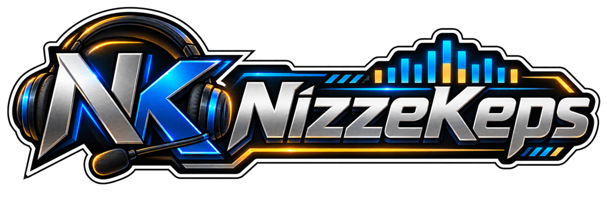

02 ARCHIVO VISUAL
Nueve variables. Una identidad.
01/09
VARIABLE 01 Estrategia elegante
03 AUDIO DECK
Vector Spectrum
Hz → dB
0:00 0:00

BLUE SIGNAL LAB // SESIÓN ACTIVA
Una experiencia donde la estrategia, los datos y la música convergen.
El acceso activa la música · volumen ajustable